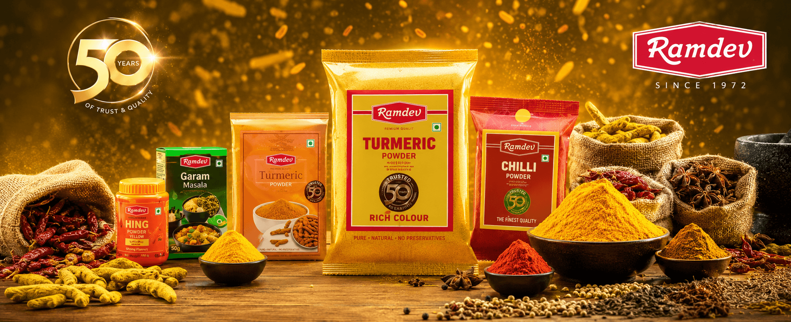

Turmeric is present in almost every Indian kitchen, making distinct brand meaning essential for recall.
← Back to workPure in every pinch.
Ramdev Haldi · TVC
Pure in every pinch.
Auspicious in every moment.

Project overview
An everyday spice.
A deeply Indian symbol.
Haldi carries colour and flavour into everyday cooking—but its meaning extends far beyond the kitchen.
The film brings product purity and cultural significance into one memorable platform: “Shuddh Haldi. Shubh Haldi.”
- Product
- Turmeric Powder
- Format
- Television Commercial
- Core Thought
- Purity + Auspiciousness
- Visual World
- Warm, Golden, Indian
The hero film
Shuddh Haldi.
Shubh Haldi.
A golden product story that moves naturally between the everyday warmth of food and the emotional significance of auspicious moments.
The challenge
Make the familiar
feel meaningful again.
The story needed to connect dependable product purity with haldi’s emotional and ceremonial significance.
The creative approach
Begin with colour.
End with meaning.
- 01
Everyday warmth
Use food, family and familiar rituals to give the product an immediate place in real life.
- 02
Cultural resonance
Let haldi’s auspicious associations deepen the story beyond functional product communication.
- 03
Pack-led recall
Resolve the emotion in a clear product moment and a concise, ownable brand line.
The visual world
Golden by nature.
Rich with memory.
Turmeric yellow leads the palette, supported by warm spice tones, tactile ingredients and clean product framing. The result feels appetising, celebratory and unmistakably rooted in India.

The film grammar
Product clarity.
Emotional warmth.
Food styling
Texture and colour make turmeric’s role in the kitchen instantly tangible.
Production design
Warm, familiar spaces hold the story in an authentic everyday world.
Product cinematography
Ingredient, powder and pack details create clear visual ownership.
Edit and sound
A measured rhythm carries the film from routine to emotional resolution.
The outcome
A familiar ingredient.
A more ownable meaning.
The film gives Ramdev Haldi a simple, memorable role across both everyday cooking and auspicious Indian moments.
Clear promise
Purity becomes the foundation of the product story.
Cultural relevance
The brand participates naturally in moments that already matter.
Pack recall
A decisive product close converts emotion into recognition.
Colour for every meal.Meaning for every moment.
Have a product truth worth remembering?